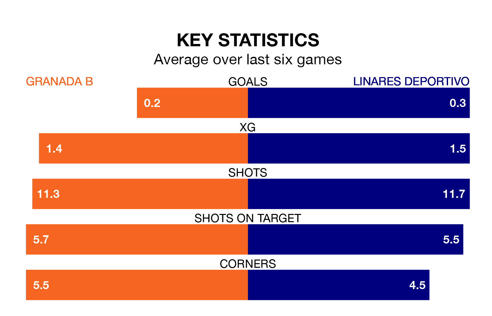

Sunday's match at the Estadio Miguel Prieto Garcia sees two relegation candidates play each other, as bottom of the table Granada B host 17th-placed Linares Deportivo.
Granada B have picked up 11 points from their first 11 Primera Division RFEF Group 2 games, with two wins and five draws.
That is seven points less than Linares Deportivo have collected, having won four and drawn six.
Granada B are in terrible form in Primera Division RFEF Group 2, with no wins and a draw from their last six games.
With a win and two draws over that period, Linares Deportivo's form is better – they have taken five points from 18, compared to the hosts' one.
In the last 10 years, Granada B and Linares Deportivo have played each other on seven occasions. Granada B won two of them, Linares Deportivo three, and they drew twice.
On average, Granada B scored 1.3 goals and Linares Deportivo 0.9 in those matches.
Their last meeting was on September 2, when they played out a 0-0 draw.
With 12 goals in 22 games so far this season, Granada B are the league's joint-third-lowest scorers with 0.5 goals per game. And they are conceding more than average, letting in 35 goals at a rate of 1.6 per game.
The away side are also below average scorers, with 0.6 goals per game, compared to a league average of 1.1. They have conceded 1.5 goals per game.
Granada B's last match was on February 4, a 1-0 loss against UD Ibiza.
Linares Deportivo lost 2-0 against Córdoba last time out, on February 3.
Updated: 11:47 (UTC), 05/02/24